Even More Restless Ghosts is a secondary quest where the player helps Zanik lay the ghosts of Fellhollow to rest. Players must collect the ghostspeak amulet from the well in Bramblemead, but completion of the first Restless Ghosts quest is not needed, just starting it.
Overview
- Restless Ghosts (Starting)
- Withering Heights (partial completion - must disable all four god shrines)
- Clay decoration
- mining equipment of power level 4 or higher (i.e., iron pickaxe or runes for Rocksplosion)
- building materals for a square foundation, four walls, and a roof (e.g., 36 ash logs)
- Good armour and weapons
- A ranged or magic weapon to kill rotsworn zombies
- Food
- Antipoison potions
- Multiple zombies
Walkthrough
Begin the quest by speaking with Zanik in Bleakfields Valley. She is located in the ruins to the east of Cathan at the three standing stones and north of a nearby spectral door.

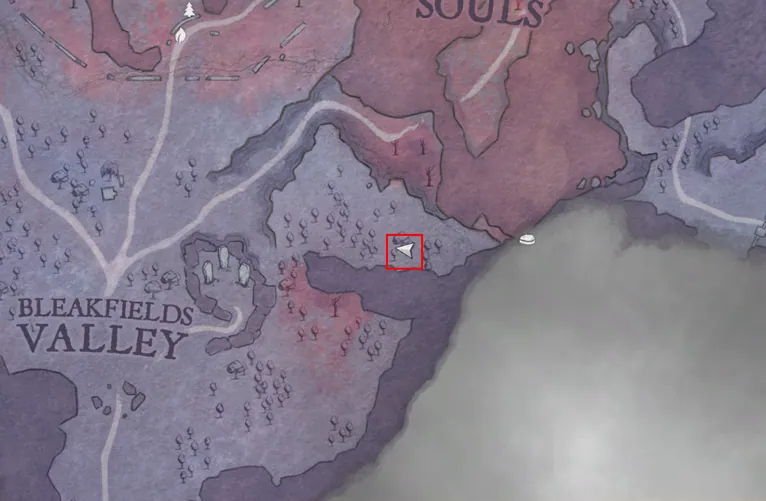

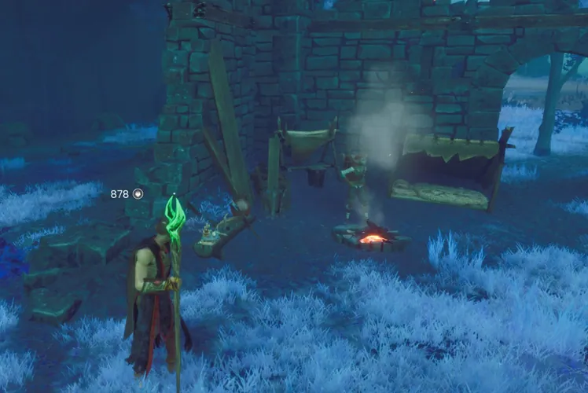
Windswept ghost
Note: All four God Shrines must be activated to disable the barrier surrounding the village.
In Emberwood, travel to the ruin village previously surrounded by a magic barrier. In the outskirts of the village, near the north-east, are the ruins of a small home where the windswept ghost is located. Build a house consisting of any square foundation (under the ghost), four walls, and an enclosed roof around the windswept ghost. Talk to the windswept ghost again to complete the section. The door of the house must be closed for it to complete.

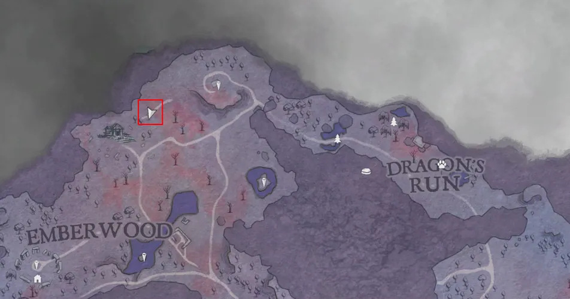

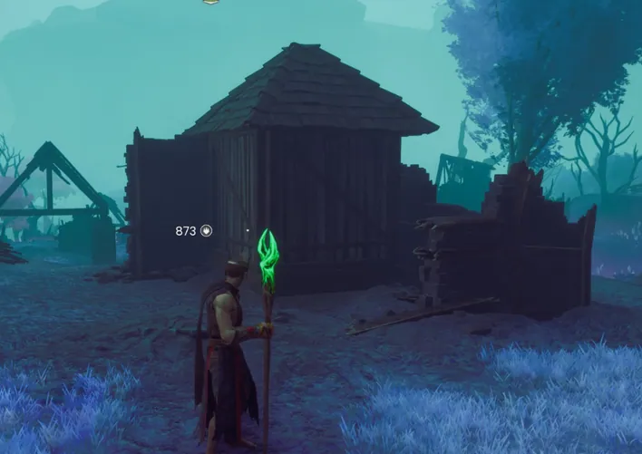
Reminiscing ghost
In Hope's Fall, travel to the ruin gates located north of the dragon spire. Speak with the reminiscing ghost and gift a Clay Decoration to complete the section.

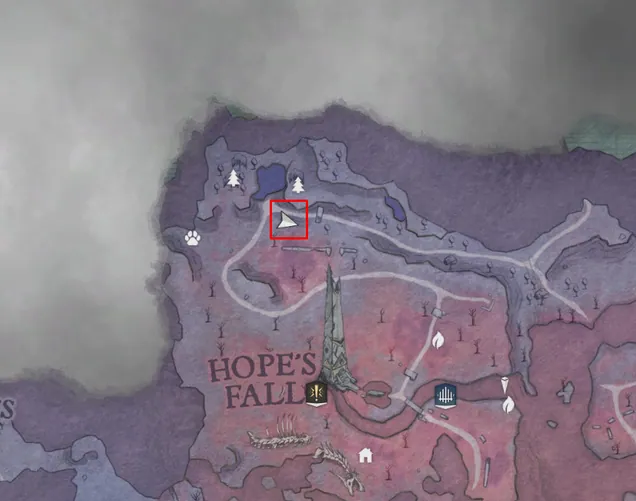

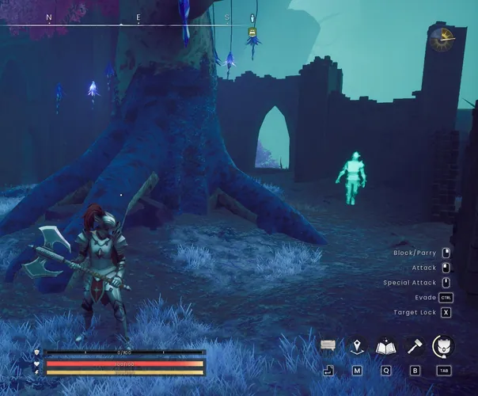
Paint-spattered ghost
Between the Lake of Lost Souls and Coalridge Pass, just north-east of the most eastern area of the tainted river, lies the paint-spattered ghost. Talk to the ghost and it will describe the location of the sketchbook their husband took with him.

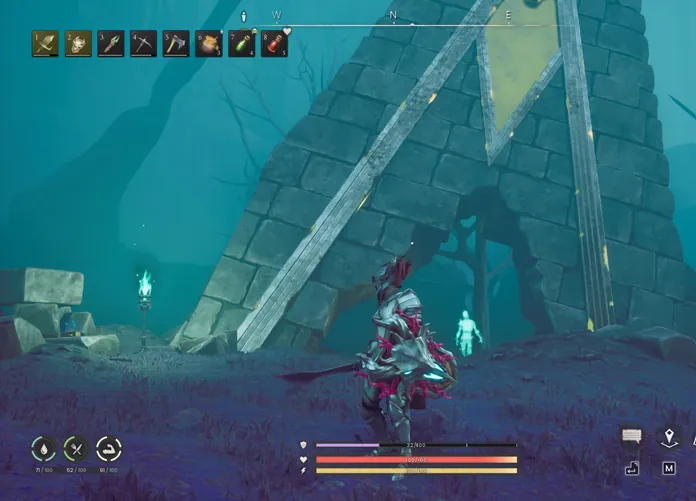

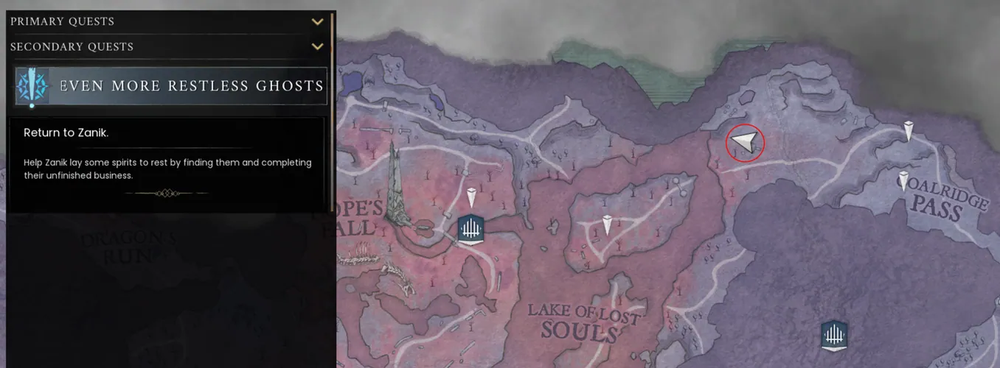
Travel north-east to a set of ruins that lie at the mouth of the cave. Enter the cave and clear a grouping of granite deposits atop a coal node to the left side to uncover a skeleton and the sketchbook. Interact with the sketchbook and then return to speak with the paint-spattered ghost again.

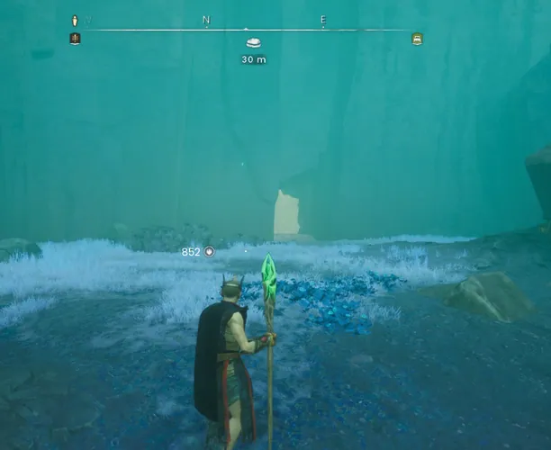

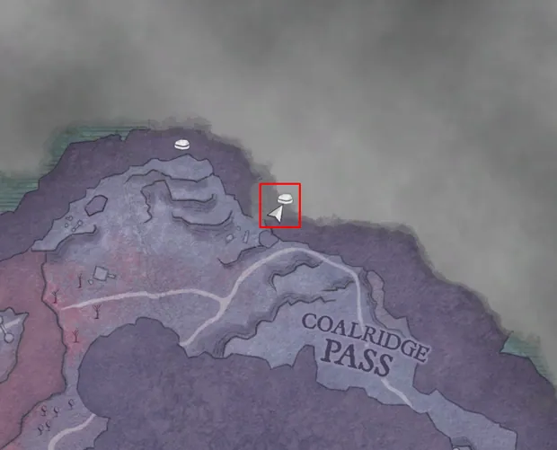

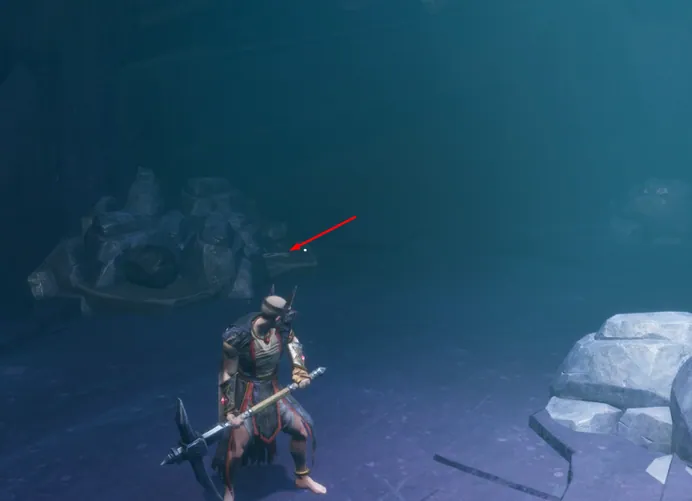
Finishing Up
Return to Zanik in Bleakfields Valley to finish the quest.
Rewards
- Recipe for Dorgeshuun crossbow.
Required to Complete
This quest is required to complete the following quest(s):
- None
This guide is the wiki's Even More Restless Ghosts article, by its editors, reformatted for this site. Licensed CC BY-NC-SA 3.0.